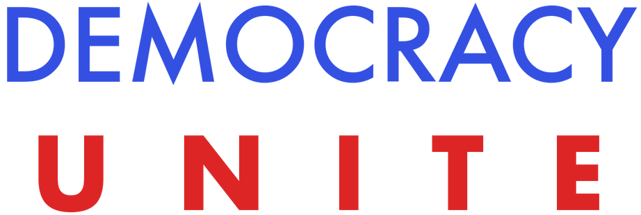
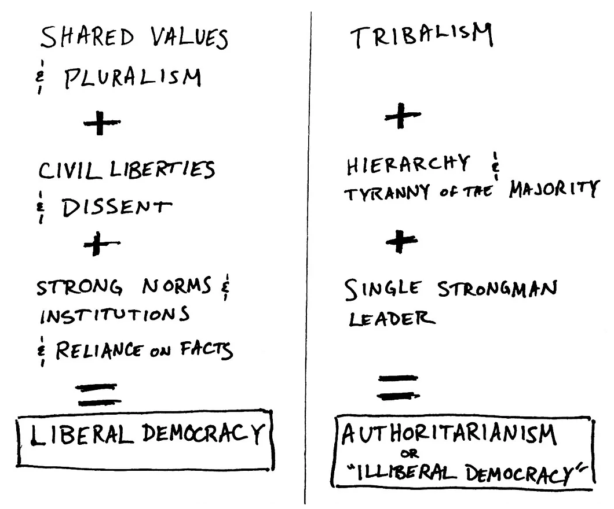

Mission
Unite Americans around our longstanding ideals of Liberty and
Democracy, and resist Authoritarianism, by creating a bipartisan majority
focused on common principles, the Constitution, institutions, and norms, which
serve as the bedrock of Western democracy.
Our Beliefs and Vision
We believe that most Americans share common goals and common aspirations that
can and should unite us, but our current approach to politics obscures this
truth, focusing only on our differences.
Furthermore, we believe these shared values are profoundly American. Firmly
grounded in the Constitution and realized through our institutions and norms,
our values have enabled us to build a democracy that has withstood civil war,
recessions, and profound change within and beyond our borders. They have
catapulted us from a British colony to a global superpower in less than 250
years. While our democracy has never been perfect, it has always aspired to be
a more perfect union, built on a solid foundation of shared principles.
Today, our democracy is threatened by the erosion of institutions and norms
that have served as the bedrock of our country. When we lack strong
institutions and norms, politics degenerates into a series of escalating
battles between "us vs. them". Politics becomes a game that prizes winning, no
matter the cost.
Eventually, we retreat into our "tribes", beginning to associate with, listen
to, and value only members of our political party, religion, race, or other
affiliation. We miss the opportunity to be enriched and inspired by our
diversity, inspired by a healthy "competition of ideas", and guided by the
fundamentals of our shared values and Constitution.
That makes us susceptible to something profoundly un-American: Authoritarianism
(and other forms of Illiberal Democracy). This can provide tantalizing false
hope to people in genuine pain, but ultimately robs those very people of their
voice, their freedom, and their prosperity. Once a nation strays toward
Authoritarianism, history suggests that recovering the loss of Liberty is very
difficult.
The type of Authoritarianism we are worried about is not the dramatic image of
a military dictator driving tanks down Main Street. Authoritarianism can be
much more boring and tolerable, lulling us into accepting and normalizing
actions that actually represent a radical departure from what America stands
for.
The graver Authoritarian danger lies in leaders and movements that undermine
facts and destabilize institutions to make the country more open to—and even
dependent on—their own personal control without check or balance. This approach
to government prioritizes the rule of one man's personal will over the
protection of civil liberties and the rule of law. This type of leadership
devalues the "competition of ideas" and stifles dissent, which present a threat
to the singular goals and glory of the Leader, who claims to represent the
majority. This is possible because Authoritarian leaders can be very
persuasive. They know how to play tot the fears and frustrations of
constituents to trade the liberties of their fellow Americans for the promise
of privileged protection for their own "tribe."

Many symptoms of this Tribalism and Authoritarianism are now commonplace:
deepening polarization and partisanship; politicians interested only in
reelection and self-gain; disputes over who is a "real" American; insensitivity
to the plight or pain of those in different social or economic classes;
reflexive, intense opposition to "the other side," and bitter policy battles
that waste time and money while generating minimal results.
But none of these is the root cause. The root cause is that we stopped trusting
one another and stopped believing that we are thoroughly a Union: a union of
states, a union of ideas, a union of cultures. And most importantly, a union of
people, united across divides of party, geography, income, gender, and race in
this exceedingly rare and precious experiment in democracy. And this loss of
united belief has been accelerated in an age when globalization and
technological change are creating economic winners and losers, deepening our
divisions.
It doesn't have to be this way. We believe that under all of this polarization,
fighting, and despair, there remains a bedrock of core American ideals. Our
greatest strengths have always been forged from our greatest differences. When
we stop believing in our ability to fashion our differences into a more perfect
union, we become a typical story in history: the decline of yet another empire
eroded from within. But the story of America has never been typical. We are the
shining example, and we must once again rise to our calling.
Out of many, one.
© DemocracyUnite 2017